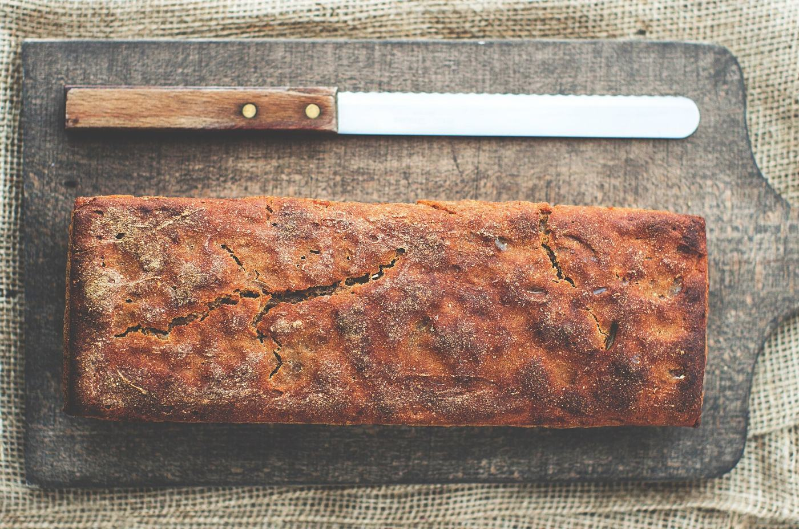
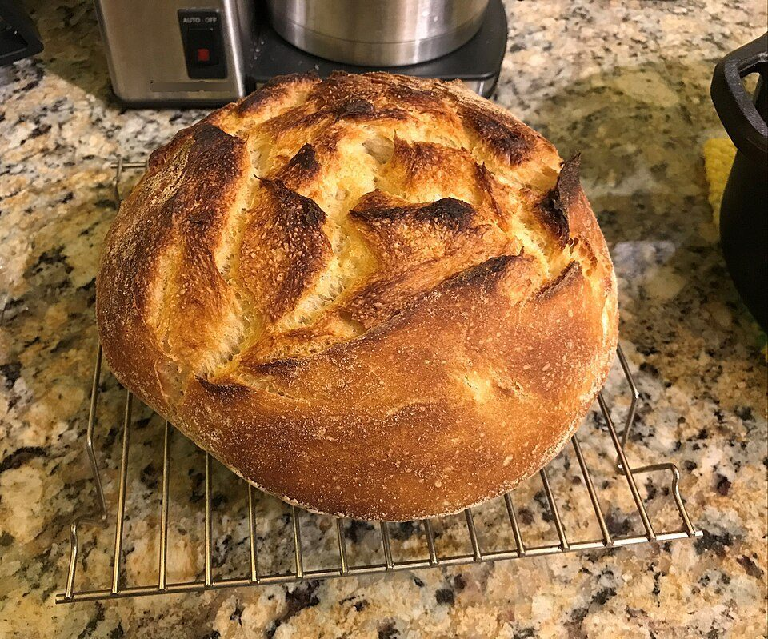

2 / カッター刃
店のこと
確認できていることは、所在地とInstagramだけです。ほかは準備中です。
部位 2
カッター刃のところから、読みはじめる
- 1
ふた
箱の上をおおう、ひらく部分。ここをあけて、中のロールを出し入れします。
- 2
カッター刃
ふたの前の縁にある、ぎざぎざの刃。フィルムをこの縁で切ります。
- 3
本体の箱
ロールを納める長い箱。ふたと組み合わさって、全体の形になります。
- 4
巻き芯
フィルムを巻いている紙の筒。ロールの中心にあります。
- 5
フィルム
箱から引き出される、薄い透明のシート。引き出した先端が箱の外に出ています。
- 6
抜け止めのツメ
箱の側面にある小さなツメ。引き出すときにロールが外れにくくなるよう受けます。
配置図のうち、強調した番号がこのページの部位です。制作側の連想で、お店の理念・由来とは無関係です。
ごあいさつ
準備中の項目
| お店の考え | 準備中 |
|---|---|
| お店の歴史 | 準備中 |
| スタッフ | 準備中 |
| こだわり | 準備中 |
これらは、お店からお聞きしたうえで掲載します。制作側が推測で書くことはしません。
ギャラリー(イメージ)
パンの断面と、角型のパン





写真はパンのイメージです。お店のものではありません。